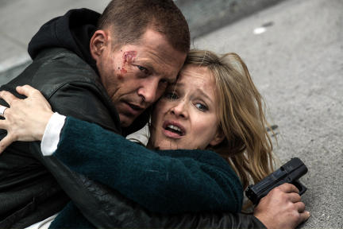

Rückschau
Die letzten Folgen
TATORT: KÖLN • Vom 23.03.14
Schon wieder Feueralarm in Köln: Eine Serie von Brandanschlägen hält die Stadt in Atem, jetzt gibt es die ersten Todesopfer. In einem vollkommen ausgebrannten Bungalow kamen drei Kinder ums Leben. Max Ballauf und Freddy Schenk brauchen einen schnellen Fahndungserfolg, denn die Abstände zwischen den Brandanschlägen werden immer kürzer.
Mehr ❯
TATORT: LEIPZIG • Vom 16.03.14
Schon wieder Feueralarm in Köln: Eine Serie von Brandanschlägen hält die Stadt in Atem, jetzt gibt es die ersten Todesopfer. In einem vollkommen ausgebrannten Bungalow kamen drei Kinder ums Leben. Max Ballauf und Freddy Schenk brauchen einen schnellen Fahndungserfolg, denn die Abstände zwischen den Brandanschlägen werden immer kürzer.
Mehr ❯
TATORT: HAMBURG • Vom 09.03.14

Hauptkommissar Nick Tschiller und sein Kollege Yalcin Gümer setzen den kurdischen Astan-Clan unter Druck, der in einem blutigen Kampf gegen den Bürsum-Clan die Macht in der Hamburger Unterwelt zu übernehmen droht. Obwohl Firat Astan, gegen den das ungleiche Paar schon im ersten Fall ermittelte, im Gefängnis sitzt, setzt er ein Kopfgeld auf den Tod von Nick aus.
Mehr ❯